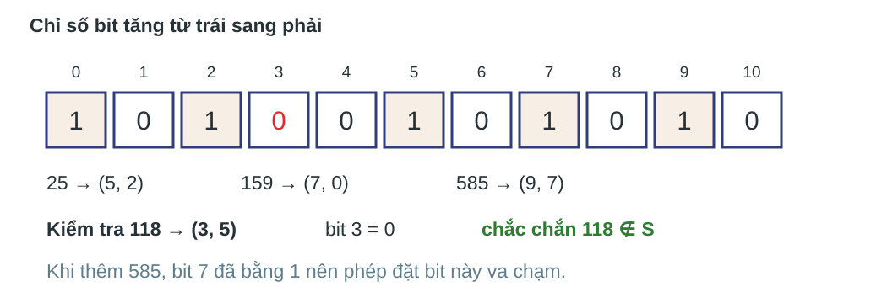

Dòng dữ liệu: mô hình, lấy mẫu và lọc Băm khóa giữ trọn nhóm, hồ chứa giữ mẫu cỡ cố định, mảng bit loại hầu hết khóa ngoài tập.
Bài 08 · Giải thuật nền tảng của Khoa học dữ liệu
Học kỳ 1 · Năm học 2026–2027
Trường Đại học Công nghệ · Đại học Quốc gia Hà Nội
Bài 01 đã nêu hai bài toán dòng: giữ mẫu truy vấn và lọc thư đến. Dòng dữ liệu đến liên tục và không biết trước độ dài, nên không thể lưu toàn bộ lịch sử rồi xử lý như dữ liệu tĩnh. Ba cấu trúc của bài phục vụ ba loại câu hỏi: thống kê theo nhóm, mẫu đại diện có cỡ cố định và câu hỏi thành viên. Đếm phần tử phân biệt, mômen và cửa sổ thời gian thuộc Bài 09.
Nguồn: MMDS ấn bản 3, Chương 4, mục 4.1–4.3; slide MMDS Data Streams 1–2 (http://www.mmds.org).
Tiên quyết và quy ước Nhắc lại: hàm băm trả về cùng một giá trị cho cùng một khóa (Bài 02, 05).
Nhắc lại: $\Pr[A_1\cap\cdots\cap A_\ell]=\prod_i\Pr[A_i]$ khi $A_1,\ldots,A_\ell$ độc lập.
Nhắc lại: $(1-1/n)^n\approx e^{-1}$ khi $n$ lớn.
Ký hiệu: dòng $x_1,x_2,\ldots$, mỗi phần tử là một bộ $t$ có khóa $K(t)$; $r$ là số phần tử đã đọc.
Ký hiệu: hồ chứa (reservoir) $W$ có $s$ ô; Bloom filter có $n$ bit, $k$ hàm băm, tập $S$ gồm $m$ khóa.
Trạng thái là dữ liệu thuật toán giữ lại giữa hai lần đọc; mọi câu trả lời được tính từ trạng thái. Tính tất định của hàm băm thay cho bảng lưu quyết định: mọi bộ của một người dùng có cùng giá trị băm nên nhận cùng quyết định giữ hoặc bỏ. Tính độc lập dùng cho số ngẫu nhiên của hồ chứa và cho $km$ phép băm đều của Bloom filter, một mảng bit trả lời “chắc chắn không thuộc” hoặc “có thể thuộc”. Giới hạn $(1-1/n)^n\approx e^{-1}$ (MMDS §1.3.5) cho $(1-1/n)^{km}\approx e^{-km/n}$. Các số đếm kỳ vọng ở mạch lấy mẫu theo khóa dùng tuyến tính kỳ vọng; bất biến của hồ chứa được chứng minh bằng quy nạp theo $r$. Số hàm băm $k$ khác khóa $K$; $n$ chỉ là số bit của Bloom filter.
Mục tiêu học tập Đặc tả thuật toán dòng một lượt; chọn khóa lấy mẫu cho một thống kê theo nhóm. Lập vết hồ chứa; chứng minh bằng quy nạp mỗi phần tử đã đọc còn trong mẫu với xác suất $s/r\ (r\ge s)$. Xây dựng và truy vấn Bloom filter; tính xác suất nhận nhầm khóa ngoài $S$ và số hàm băm tối ưu. Mục tiêu 1 đòi viết đầu vào, trạng thái, đầu ra của một thuật toán dòng và chọn khóa nhận diện đúng đơn vị mà thống kê gộp. Mục tiêu 2 đòi lập vết với các số ngẫu nhiên cho trước và trình bày đủ cơ sở, bước quy nạp. Mục tiêu 3 đòi đặt bit, trả lời truy vấn, tính $(1-e^{-km/n})^k$ và $k^*=(n/m)\ln2$. Mục tiêu 1 được kiểm bằng câu hỏi cuối mạch mô hình dòng, mạch lấy mẫu theo khóa và Bài tập 4.2.1; mục tiêu 2 bằng vết chạy hai ô và câu hỏi cuối mạch hồ chứa; mục tiêu 3 bằng ví dụ 11 bit, câu hỏi cuối mạch Bloom filter và Bài tập 4.3.1–4.3.3. Câu hỏi tự kiểm tra ở phần tổng kết dùng cả ba mục tiêu.
Nội dung Mở đầu Mô hình tính toán trên dòng Lấy mẫu theo khóa Lấy mẫu hồ chứa Lọc thành viên bằng Bloom filter Tổng kết và chuyển tiếp Bài tập vận dụng Đọc trước: Leskovec, Rajaraman, Ullman, Mining of Massive Datasets (MMDS), ấn bản 3, Chương 4, §§4.1–4.3, tr.131–142.
Mô hình tính toán trên dòng đặc tả thuật toán đọc mỗi phần tử một lần và trả lời từ trạng thái giữ lại, rồi đo chi phí theo từng phần tử. Lấy mẫu theo khóa chỉ cần trạng thái quyết định cỡ hằng và giữ hoặc bỏ trọn mọi bộ của một khóa, nhưng cỡ mẫu tăng theo dòng. Lấy mẫu hồ chứa giữ đúng $s$ phần tử, đổi lại mất quan hệ theo khóa. Bloom filter trả lời câu hỏi thành viên bằng một mảng bit cố định và có thể nhận nhầm khóa ngoài $S$. Tổng kết đối chiếu giả thiết, bảo đảm và chi phí của ba cấu trúc trên dòng truy vấn; bài tập vận dụng gồm bốn bài của MMDS về chọn khóa và định cỡ Bloom filter.
Vấn đề trung tâm Nhu cầu: lấy mẫu, lọc dòng chưa biết độ dài, không lưu cả dòng.
Đọc một lần nên chỉ trả lời từ trạng thái giữ lại. Hàm băm đều giữ trọn mỗi người dùng với xác suất $1/10$; mẫu có $\approx r/10$ bộ. Hồ chứa rút số đều, độc lập và giữ mỗi phần tử đã đọc với xác suất $s/r\ (r\ge s)$. Bloom filter $8\cdot10^9$ bit, sáu hàm băm đều, độc lập, không loại khóa nào của $10^9$ khóa, nhận nhầm $\approx2\%$. Theo MMDS §4.2.1, tr.136, dòng gồm các bộ (người dùng, truy vấn, thời gian) và chỉ lưu được $1/10$ dòng. Dòng thứ hai dùng hai tính chất của $h$: tính tất định giữ trọn mọi bộ của người được chọn, nên tỷ lệ truy vấn lặp của người đó tính đúng; tính đều trên $\{0,\ldots,9\}$, theo cách chọn $h$, cho mỗi người xác suất $1/10$. Trạng thái quyết định có cỡ hằng, nhưng mẫu tăng theo dòng; hồ chứa mới giữ cỡ mẫu cố định. Dòng cuối dùng tình huống lọc thư ở §4.3.1, tr.139: 1 GB, tức $8\cdot10^9$ bit. Sách dùng một hàm băm ở §4.3.1 và hai ở Ví dụ 4.4; số 6 do học phần chọn, là số nguyên gần $k^*=8\ln2\approx5{,}5$, và xấp xỉ mũ cho $(1-e^{-6/8})^6\approx0{,}0216$. Không khóa nào của $S$ bị loại khi không xóa bit và truy vấn dùng cùng hàm băm, cùng mảng.
2. Mô hình tính toán trên dòngMuốn trả lời truy vấn trên dòng chưa biết độ dài, phải giữ trạng thái nhỏ hơn lịch sử.
Trạng thái theo truy vấn · Mô hình dòng · Chi phí mỗi phần tử · Trạng thái của phương sai
Mạch mở đầu đặt nhu cầu lấy mẫu và lọc dòng chưa biết độ dài mà không lưu cả dòng, cùng ký hiệu $x_i$, $r$, $t$, $K(t)$. Mạch này đặc tả thuật toán dòng: mỗi phần tử đọc một lần, câu trả lời lấy từ trạng thái, và truy vấn quyết định trạng thái cần giữ. Chi phí đo theo từng phần tử qua bộ nhớ, phép cập nhật, số lượt đọc và sai số. Mạch lấy mẫu theo khóa dùng yêu cầu bộ nhớ này để loại phương án bảng theo người dùng.
Ví dụ: ba truy vấn trên dòng cảm biến Muốn trả lời truy vấn mà không lưu lịch sử, phải chọn trạng thái theo truy vấn.
Một triệu cảm biến độ cao mặt biển gửi 10 số 4 byte mỗi giây, khoảng 3,5 TB mỗi ngày.
Một cảm biến gửi dòng $1,5,2,7,4,0,3,5$.
Truy vấn Trạng thái Sau 8 số giá trị lớn nhất 1 số $7$ trung bình mọi số tổng và số đếm $27/8=3{,}375$ trung bình 24 số gần nhất 24 số $27/8$ (mới có 8 số)
Dãy $1,5,2,7,4,0,3,5$ là dòng đầu trong Hình 4.1 của MMDS (tr.132), ở đây đọc như số đo của một cảm biến; ba truy vấn lấy từ Ví dụ 4.1 (tr.134), vốn viết cho cảm biến nhiệt độ. Giá trị lớn nhất cập nhật bằng một phép so sánh với phần tử mới. Trung bình mọi số giữ tổng $27$ và số đếm $r=8$. Trung bình 24 số gần nhất phải giữ đủ 24 số, vì khi phần tử mới đến, số cũ nhất bị bỏ và tổng phải trừ đúng số đó. Quy mô thuộc cảm biến độ cao mặt biển có GPS ở §4.1.2, tr.133: $10^6\cdot10\cdot4\cdot86\,400\approx3{,}46\cdot10^{12}$ byte mỗi ngày, sách làm tròn thành 3,5 TB; cảm biến nhiệt độ của sách chỉ gửi một số mỗi giờ. Trạng thái của hai truy vấn đầu không tăng theo $r$; của truy vấn thứ ba bị chặn bởi 24 số.
Mô hình dòng dữ liệu Hình vẽ lại Hình 4.1 của MMDS (§4.1.1, tr.132) và giữ quy ước của sách: phần tử nằm gần bộ xử lý đến trước, nên dòng $1,5,2,7,4,0,3,5$ được viết ngược, với $x_1=1$ sát bộ xử lý. Hệ thống không điều khiển nhịp đến, khác với hệ quản trị cơ sở dữ liệu tự quyết tốc độ đọc đĩa. Truy vấn thường trực nằm sẵn trong bộ xử lý, chạy liên tục và cho kết quả vào thời điểm định trước, chẳng hạn mỗi khi có phần tử mới; truy vấn tức thời hỏi một lần về trạng thái hiện tại. Bộ nhớ làm việc có thể là bộ nhớ chính hoặc đĩa, nhưng không chứa hết mọi dòng; trạng thái của thuật toán nằm ở đây. Kho lưu trữ giữ được dòng, nhưng truy xuất quá chậm nên không dùng để trả lời; khung nét đứt biểu thị điều này.
Chi phí: thuật toán dòng Mô hình: chi phí tính cho mỗi phần tử đến; bộ nhớ đếm bằng từ máy (word).
Truy vấn Bộ nhớ (từ) Cập nhật mỗi phần tử Lượt đọc Sai số giá trị lớn nhất 1 1 phép so sánh 1 không trung bình mọi số 2 2 phép cộng 1 không trung bình 24 số gần nhất $24+3$ 4 phép, bộ đệm vòng (ring buffer) 1 không
Sau $r$ phần tử, công việc bằng $r$ nhân số phép mỗi phần tử.
Mỗi hàng đếm chi phí của một truy vấn trên dòng cảm biến. Giá trị lớn nhất giữ một số và so sánh nó với phần tử mới. Trung bình giữ tổng và số đếm; mỗi phần tử tốn hai phép cộng. Cửa sổ 24 số giữ các số trong một bộ đệm vòng, cùng tổng chạy, vị trí ghi tiếp theo và số đếm $\min(r,24)$, tổng cộng 27 từ; mỗi phần tử trừ số cũ nhất khỏi tổng khi $r>24$ (tăng số đếm khi $r\le24$), cộng số mới, ghi đè ô cũ và tăng vị trí theo modulo 24. Bộ đếm $r$ cần $\lceil\log_2(r+1)\rceil$ bit, vừa một từ 64 bit khi $r<2^{64}$. Ba truy vấn đều trả lời chính xác; khi trạng thái quá nhỏ để trả lời chính xác, thuật toán phải nêu đại lượng xấp xỉ và giả thiết. Nguồn: MMDS §4.1.3–4.1.4, tr.134–135.
Bài tập: trạng thái của phương sai Truy vấn thường trực trả phương sai của mọi số đã đọc:
$\sigma_r^2=\dfrac1r\sum_{i=1}^{r}(x_i-\bar x_r)^2,\qquad \bar x_r=\dfrac1r\sum_{i=1}^{r}x_i.$
Câu hỏi: trạng thái cỡ hằng nào đủ để trả lời sau mỗi phần tử?
Tính $\sigma_8^2$ trên dòng $1,5,2,7,4,0,3,5$.
Lời giải: giữ ba số $r$, $\sum x_i$ và $\sum x_i^2$; mỗi phần tử mới tăng $r$, cộng $x_r$ vào tổng và cộng $x_r^2$ vào tổng bình phương, nên cập nhật không tăng theo $r$. Khai triển bình phương cho $\sum_i(x_i-\bar x_r)^2=\sum_i x_i^2-r\bar x_r^2$, suy ra $\sigma_r^2=\frac1r\sum_i x_i^2-\bar x_r^2$. Sau 8 số: $r=8$, $\sum x_i=27$, $\sum x_i^2=1+25+4+49+16+0+9+25=129$, nên $\sigma_8^2=129/8-(27/8)^2=16{,}125-11{,}390625=4{,}734375$. Lưu trực tiếp $\bar x_r$ thay cho tổng cũng được nhưng mỗi bước cần một phép chia. Nguồn: câu hỏi của học phần, dựng trên dòng của MMDS Hình 4.1, cùng kiểu với truy vấn trung bình trong Ví dụ 4.1. Truy vấn theo từng nhóm, như tỷ lệ truy vấn lặp của từng người dùng trên dòng tìm kiếm, phải nhớ các truy vấn đã gặp của từng người, nên trạng thái tăng theo dòng; mạch sau chuyển sang lấy mẫu.
3. Lấy mẫu theo khóaMuốn ước lượng tỷ lệ truy vấn lặp của mỗi người dùng, phải giữ hoặc bỏ trọn từng người.
Sai lệch khi lấy từng bộ · Bảng nhãn và hàm băm · Tính nhất quán theo khóa · Chọn khóa · Cỡ mẫu
Mô hình dòng đòi trả lời từ trạng thái nhỏ hơn lịch sử, và bài tập phương sai cho thấy một số truy vấn chỉ cần trạng thái cỡ hằng. Với dòng truy vấn tìm kiếm, lấy ngẫu nhiên $1/10$ từng bộ làm sai tỷ lệ truy vấn lặp của từng người dùng; bảng nhãn theo người dùng sửa sai lệch nhưng tăng theo số người dùng. Hàm băm với ngưỡng $a$ tái tạo cùng nhãn mà không lưu bảng. Cỡ mẫu vẫn tăng theo dòng; mạch hồ chứa xử lý giới hạn này.
Ví dụ: ba bộ truy vấn của An Muốn ước lượng tỷ lệ lặp khi giữ mỗi bộ độc lập với xác suất $1/10$.
An gõ “đồ thị” hai lần, “băm” một lần; tỷ lệ lặp $1/2$: 1 trong 2 truy vấn được gõ lại.
Được giữ Xác suất cả hai bộ “đồ thị” $\frac{1}{10}\cdot\frac{1}{10}=\frac{1}{100}$ đúng một bộ “đồ thị” $2\cdot\frac{1}{10}\cdot\frac{9}{10}=\frac{18}{100}$ bộ “băm” $\frac{1}{10}$
Nếu “đồ thị” có trong mẫu, xác suất có đủ hai bản là $1/19$.
Tình huống theo MMDS §4.2.1, tr.136: máy tìm kiếm chỉ lưu $1/10$ dòng bộ (người dùng, truy vấn tìm kiếm, thời gian) và muốn biết tỷ lệ truy vấn lặp của người dùng điển hình. Tỷ lệ lặp của An là số truy vấn phân biệt xuất hiện hai lần chia cho số truy vấn phân biệt, $1/2$. Mỗi bộ được giữ độc lập, nên hai bộ “đồ thị” cho ba trường hợp có xác suất $1/100$, $18/100$ và $81/100$. Điều kiện trên việc “đồ thị” có mặt trong mẫu, xác suất thấy nó hai lần là $(1/100)/(19/100)=1/19$, nên mẫu kéo tỷ lệ lặp về phía truy vấn một lần. Ba bộ của An do học phần dựng.
Sai lệch của mẫu từng bộ Một người dùng có $u$ truy vấn xuất hiện một lần, $d$ truy vấn xuất hiện hai lần.
Loại Trong dòng Kỳ vọng còn hai bản Kỳ vọng còn một bản một lần $u$ $0$ $u/10$ hai lần $d$ $d/100$ $18d/100$
$\dfrac{d/100}{u/10+d/100+18d/100}=\dfrac{d}{10u+19d}\ne\dfrac{d}{u+d}$
Với $u=d=1$, mẫu cho $1/29$ thay vì $1/2$; mẫu số tính cả “băm” nên khác $1/19$.
Bảng đếm theo MMDS §4.2.1, tr.136–137: truy vấn một lần được giữ với xác suất $1/10$; truy vấn hai lần còn đủ hai bản với xác suất $1/100$ và còn đúng một bản với xác suất $18/100$. Tỷ lệ trên mẫu được ước lượng bằng tỷ số các số đếm kỳ vọng, không phải kỳ vọng của một tỷ số ngẫu nhiên. Hai vế bằng nhau khi và chỉ khi $9u+18d=0$, không xảy ra với $u,d>0$. Với An, $u=d=1$: $(1/100)/(1/10+19/100)=1/29$; số này khác $1/19$ vì mẫu số tính cả truy vấn “băm”. MMDS viết $s$ cho số truy vấn một lần; ở đây dùng $u$ vì $s$ là sức chứa hồ chứa.
Bảng giữ hoặc bỏ theo người dùng Nhu cầu: giữ trọn truy vấn tìm kiếm của mỗi người dùng với xác suất $1/10$.
Thuật toán. Lần đầu gặp một người, rút số đều trong $\{0,\ldots,9\}$; số $0$ ghi “giữ”, số khác ghi “bỏ”.
Bộ đến sau tra bảng, vào mẫu nếu nhãn là “giữ”.
Câu hỏi: bảng tăng theo đại lượng nào, và khi nào vượt bộ nhớ làm việc?
Lời giải: bảng có một hàng cho mỗi người dùng phân biệt đã gặp, nên tăng theo số người dùng phân biệt, tối đa $r$; khi số này không bị chặn, bảng vượt mọi bộ nhớ làm việc cố định. MMDS §4.2.2, tr.137 nêu phương án này và lưu ý không có thời gian ra đĩa cho mỗi truy vấn. Về xác suất, phương án đúng: mỗi người dùng được giữ với xác suất $1/10$ và mọi bộ của người đó nhận cùng nhãn, nên khi An được giữ, mẫu chứa đủ ba bộ của An và tỷ lệ lặp tính trên mẫu đúng bằng $1/2$. Dòng năm bộ và các số rút 0, 7, 4 trong hình do học phần dựng.
Hàm băm thay bảng nhãn Bảng thêm một hàng cho mỗi người dùng mới, không bị chặn; $10^8$ người dùng cần 1,6 GB.
Hàm băm $h$ tương tự bảng nhưng không lưu: cùng tên luôn cho cùng giá trị.
Giữ bộ khi $h=0$; $h(\text{An})=0$ nên cả ba bộ của An vào mẫu.
Số $10^8$ người dùng và 16 byte mỗi hàng (8 byte mã người dùng, 8 byte nhãn và chỉ mục) là giả định của học phần để có cỡ: $10^8\cdot16=1{,}6\cdot10^9$ byte; ngoài cỡ, mỗi bộ phải tra bảng ngay khi đến, không có thời gian ra đĩa. MMDS §4.2.2, tr.137 dùng hàm băm như một bộ sinh số ngẫu nhiên có thêm tính chất: áp dụng nhiều lần cho cùng người dùng luôn cho cùng số. Với $b=10$ ngăn và ngưỡng $a=1$, người dùng được giữ khi $h=0$. Các giá trị $h(\text{An})=0$, $h(\text{Bình})=7$, $h(\text{Chi})=4$ là một hàm minh họa, chọn trùng số rút của bảng để hai phương án cho cùng mẫu trên dòng năm bộ; với hàm khác, tập người được giữ khác nhưng mỗi người vẫn được giữ trọn. Slide MMDS Streams 1 tr.15–16 dùng cùng cơ chế với tỷ lệ 30%.
Thuật toán: lấy mẫu theo khóa Đầu vào: bộ $t$ có khóa $K(t)$; số ngăn $b\ge1$, ngưỡng $0\le a\le b$; hàm $h$ từ khóa vào $\{0,\ldots,b-1\}$.
Giả thiết: với mỗi khóa $K$, $h(K)$ đều trên $\{0,\ldots,b-1\}$ theo cách chọn $h$; $h$ cố định suốt dòng.
Đầu ra: mẫu gồm đúng các bộ $t$ có $h(K(t))<a$.
LẤY-MẪU-THEO-KHÓA(t; a, h)
nếu h(K(t)) < a:
đưa t vào mẫu
Phép quyết định là so sánh $h(K(t))$ với $a$, không lưu gì theo khóa; tính đều do cách chọn $h$.
Ví dụ An ứng với $b=10$ ngăn, ngưỡng $a=1$, tức giữ khi $h=0$. Đặc tả theo MMDS §4.2.2–4.2.3, tr.137–138: tỷ lệ $a/b$ của khóa có được bằng cách băm khóa vào $b$ ngăn và nhận bộ khi giá trị băm nhỏ hơn $a$. Dấu nhỏ hơn cho đúng $a$ giá trị $0,\ldots,a-1$; slide Streams 1 tr.16 ghi “at most a” nhưng ví dụ 30% chọn ba ngăn đầu, tức ba giá trị. Biên: $a=0$ cho mẫu rỗng, $a=b$ giữ mọi bộ. Nếu $h$ chỉ gần đều thì tỷ lệ $a/b$ không còn được bảo đảm. Khi khóa gồm nhiều thành phần, $h$ kết hợp các thành phần thành một giá trị.
Tính đúng: lấy mẫu theo khóa Mệnh đề. Với $h$ cố định, mọi bộ cùng khóa cùng được giữ hoặc cùng bị bỏ.
Chứng minh. $K(t)=K(t')$ nên $h(K(t))=h(K(t'))$; hai phép so sánh với $a$ cho cùng kết quả.
Mệnh đề. Nếu $h(K)$ đều trên $\{0,\ldots,b-1\}$ theo cách chọn $h$, khóa $K$ được giữ với xác suất $a/b$.
Chứng minh. Đúng $a$ trong $b$ giá trị đồng khả năng nhỏ hơn $a$.
Mệnh đề thứ nhất là bảo đảm tất định, đúng với mọi hàm $h$, kể cả hàm không đều; nó thay bảng nhãn. Hệ quả: mọi truy vấn tìm kiếm của một người dùng được giữ đều có trong mẫu, nên tỷ lệ truy vấn lặp của người đó tính đúng: mẫu chứa đủ ba bộ của An và cho $1/2$. Mệnh đề thứ hai là xác suất theo phép chọn $h$, không theo các lần xuất hiện của khóa: sau khi chọn, $h$ cố định và mỗi khóa chắc chắn được giữ hoặc chắc chắn bị bỏ. Không có bảo đảm rằng mẫu chứa đúng $a/b$ số bộ, vì một khóa nhiều bộ làm tỷ lệ số bộ lệch xa $a/b$. Nguồn: MMDS §4.2.2–4.2.3, tr.137–138.
Chọn khóa lấy mẫu Khóa nhận diện đơn vị mà thống kê gộp các bộ.
Thống kê Khóa tỷ lệ truy vấn lặp của mỗi người người dùng số người gõ mỗi truy vấn truy vấn số lần một người gõ lại một truy vấn (người dùng, truy vấn)
Câu hỏi: khóa (người dùng, thời gian) có cho đúng tỷ lệ truy vấn lặp của từng người không?
Lời giải: không. Các bộ của cùng một người dùng có thời gian khác nhau nên có khóa khác nhau, và mệnh đề nhất quán không ràng buộc quyết định của chúng. Nếu thêm giả thiết các khóa khác nhau nhận giá trị băm độc lập theo cách chọn $h$, mỗi bộ được giữ độc lập với xác suất $1/10$, đúng là mẫu từng bộ, với sai lệch $d/(10u+19d)$. Khóa phải nhận diện đúng đơn vị mà thống kê gộp. Thêm thành phần như thời gian tách một đơn vị thành nhiều khóa; bớt thành phần, chẳng hạn chỉ giữ quốc gia, vẫn giữ trọn từng người dùng nhưng mẫu kém đại diện hơn. Ba dòng của bảng theo MMDS §4.2.3, tr.137: khóa có thể là người dùng, truy vấn hoặc cặp (người dùng, truy vấn).
Chi phí: lấy mẫu theo khóa Mô hình: đếm phép toán mỗi bộ đến; bộ nhớ đếm bằng từ máy.
Thành phần Mỗi bộ Sau $r$ bộ băm khóa 1 phép $r$ phép so sánh với $a$ 1 phép $r$ phép tham số $h$, $a$, $b$ — cỡ hằng mẫu đã lưu 0 hoặc 1 bộ kỳ vọng $ar/b$ bộ
Cỡ mẫu tăng theo dòng; giữ ngân sách cố định phải hạ ngưỡng, và tỷ lệ khóa giảm dần.
Mỗi bộ tốn một phép băm khóa và một phép so sánh; trạng thái quyết định chỉ gồm tham số của $h$ và hai số $a$, $b$, không tăng theo $r$ hay số khóa. Mẫu đã lưu có kỳ vọng $ar/b$ bộ theo cách chọn $h$, vì mỗi bộ được giữ với xác suất $a/b$; một khóa nhiều bộ làm cỡ thực lệch xa kỳ vọng. MMDS §4.2.4, tr.138 giữ ngân sách bằng cách băm vào rất nhiều ngăn và giữ ngưỡng $\tau$ (sách viết $t$): mẫu gồm các bộ có $h(K)\le\tau$; khi mẫu vượt ngân sách, hạ $\tau$ và xóa các bộ có giá trị băm vừa vượt ngưỡng. Khi đó tỷ lệ khóa giảm dần, không còn $1/10$. Hồ chứa giữ cỡ mẫu cố định trực tiếp.
Ngưỡng băm và khóa nhiều bộ Câu hỏi: với $h$ nhận giá trị trong $\{0,\ldots,99\}$, để chọn 20% khóa, giữ khi $h(K)\le20$ hay khi $h(K)<20$?
Một khóa có $10^6$ bộ. Mẫu bảo đảm gì về các bộ đó, và có bảo đảm 20% số bộ không?
Lời giải: $h(K)<20$ cho đúng 20 giá trị $0,\ldots,19$, tức tỷ lệ $20/100$; $h(K)\le20$ cho 21 giá trị, tức 21%. Khóa có $10^6$ bộ được giữ trọn hoặc bỏ trọn; nếu được giữ, nó đóng góp $10^6$ bộ vào mẫu. Mẫu không bảo đảm 20% số bộ: tỷ lệ $a/b$ áp dụng cho khóa, không cho bộ, nên một khóa nhiều bộ làm tỷ lệ số bộ trong mẫu lệch xa 20%. Nguồn: MMDS §4.2.3, tr.137–138; câu hỏi của học phần.
4. Lấy mẫu hồ chứaMuốn giữ đúng một số bộ cố định khi chưa biết độ dài dòng, phải thay ngẫu nhiên theo vị trí.
Ngân sách vị trí · Vết chạy · Bất biến của hồ chứa · Chi phí
Mẫu theo khóa giữ quan hệ theo khóa nhưng kích thước tăng theo số bộ của các khóa được chọn. Hồ chứa giữ đúng $s$ vị trí; sau $r\ge s$ phần tử, mỗi vị trí có xác suất biên $s/r$ được giữ. Hồ chứa được so với mẫu theo khóa, chạy vết với $s=2$ và đặc tả theo tiền tố hiện tại; thuật toán dùng một số ngẫu nhiên, bất biến được chứng minh bằng quy nạp qua xác suất của phần tử mới và phần tử cũ, kèm chi phí. Câu hỏi thành viên cần một cấu trúc khác.
Hồ chứa giới hạn số vị trí được giữ Khi dòng chưa biết độ dài và bộ nhớ chỉ chứa $s$ bộ, sau $r\ge s$ phần tử cần giữ đúng $s$ vị trí, mỗi vị trí có xác suất biên $s/r$ được giữ.
Bảo đảm chỉ nói về xác suất biên của từng vị trí, không khẳng định các biến cố độc lập hoặc mọi tập con có cùng xác suất. Lấy mẫu theo khóa giữ quan hệ theo khóa nhưng không giới hạn kích thước; hồ chứa giới hạn kích thước bằng cách thay ngẫu nhiên theo vị trí. Nguồn: MMDS Streams 1 trang 12 và 18. Hai phép lấy mẫu không thay thế nhau Theo khóa Hồ chứa Đơn vị chọn giá trị khóa vị trí trong dòng Kích thước tăng theo bộ của khóa chọn $\min(r,s)$ Tính nhất quán cùng khóa cùng quyết định không bảo đảm Xác suất sau $r\ge s$ $a/b$ cho mỗi khóa $s/r$ cho mỗi vị trí
Bảng ngăn lỗi dùng reservoir để trả lời truy vấn lặp theo người dùng. Nguồn: MMDS mục 4.2 và slide MMDS Streams 1 trang 12, 18–21. Vết chạy với $s=2$ Các số $j$ là một lần chạy minh họa, không phải xác suất bảo đảm.
Ở r=3, j=2 nên c thay ô 2. Ở r=4, j=4>s nên bỏ y. Ở r=5, j=1 nên z thay ô 1. Dữ liệu a,x,c,y,z lấy từ ví dụ slide MMDS; dãy j được thêm để chạy tay cơ chế. Vết chạy dùng giả thiết bộ sinh số nguyên đều trong 1,…,r và độc lập giữa các bước; nếu bộ sinh thiên lệch, các xác suất ở các trang chứng minh sau đó không còn đúng. Đặc tả theo tiền tố hiện tại Đầu vào Dòng vị trí $1,2,\ldots$; ngân sách nguyên $s\ge1$; bộ sinh số ngẫu nhiên đều, độc lập.
Điều kiện sau Nếu $r\le s$, giữ cả $r$ vị trí. Nếu $r>s$, giữ đúng $s$ vị trí và mỗi vị trí có xác suất biên $s/r$.
Vết chạy vừa trình bày cho thấy trạng thái cần đặc tả. Bảo đảm chỉ là xác suất biên của từng vị trí; không suy ra tính độc lập. Nguồn: slide MMDS Streams 1 trang 18–21. Một số ngẫu nhiên quyết định nhận và chỗ thay
HỒ-CHỨA(xᵣ, r, s, S)
nếu r ≤ s: S[r] ← xᵣ
ngược lại:
j ← số nguyên đều trong {1,…,r}
nếu j ≤ s: S[j] ← xᵣ
trả S
Cách viết j đều trong 1,…,r tương đương nhận phần tử mới với xác suất s/r, rồi chọn đều một trong s ô để thay. Mỗi lần gọi cần phép lấy mẫu đều và độc lập có điều kiện với lịch sử; ở đây r là số phần tử đã xử lý, do vòng gọi cập nhật trước mỗi lần sinh j. Nguồn: slide MMDS Streams 1 trang 19. Bất biến của hồ chứa Mệnh đề. Sau khi xử lý $r\ge s$ vị trí, hồ chứa có đúng $s$ phần tử và mỗi vị trí $i\le r$ có xác suất $s/r$ nằm trong hồ chứa.
Cơ sở $r=s$: giữ cả $s$ vị trí, nên xác suất là $1=s/s$. Bước quy nạp: xét riêng vị trí mới và mỗi vị trí cũ. Mệnh đề và cơ sở theo slide MMDS Streams 1 trang 19–20. Kích thước đúng s được duy trì vì bước r>s hoặc không đổi S, hoặc thay đúng một ô. Phần tử mới có xác suất đúng Ở bước $r+1$, phần tử mới vào hồ chứa khi $j\le s$:
$$\Pr[x_{r+1}\in S]=\frac{s}{r+1}.$$
Đây là xác suất đích cho một trong $r+1$ vị trí.
Vì j đều trên r+1 giá trị và có s giá trị được nhận. Đây là nửa thứ nhất của bước quy nạp. Nguồn: slide MMDS Streams 1 trang 20–21. Phần tử cũ sống sót với xác suất $r/(r+1)$ Điều kiện phần tử cũ đang trong hồ chứa, nó bị thay với xác suất
$$\Pr[\text{bị thay}]=\frac{s}{r+1}\cdot\frac1s=\frac1{r+1}.$$
Vì vậy $\Pr[i\in S\text{ sau bước }r+1]=\frac{s}{r}\cdot\frac{r}{r+1}=\frac{s}{r+1}$.
Vì j đều trên r+1 giá trị và có s giá trị được nhận, xác suất sống sót của phần tử cũ là 1−1/(r+1)=r/(r+1). Đây là nửa thứ hai của bước quy nạp. Nguồn: slide MMDS Streams 1 trang 21. Bộ nhớ cố định đổi lấy ngẫu nhiên theo vị trí Chi phí $\Theta(s)$ bộ nhớ; $\Theta(1)$ thời gian mỗi phần tử trong mô hình RAM, nếu sinh số nguyên đều và truy cập mảng là $O(1)$.
Kiểm tra Với $s=100,r=1\,000$, xác suất một vị trí cụ thể còn lại là bao nhiêu? Điều gì hỏng nếu bộ sinh số ngẫu nhiên thiên lệch?
Đáp án: 0,1. Bộ sinh thiên lệch hoặc phụ thuộc có thể phá bất biến s/r. Cận thời gian dùng mô hình RAM và giả định thao tác sinh số nguyên đều trong 1,…,r có chi phí O(1). Nguồn: MMDS Streams 1 trang 18–21. Sách không có bài hồ chứa trực tiếp nên recitation không tự tạo bài.
5. Lọc thành viên bằng Bloom filterMuốn loại sớm khóa không thuộc tập cho phép, phải đổi một mảng bit hữu hạn lấy một tỷ lệ dương giả.
Mảng bit · Không âm giả · Xác suất dương giả · Số hàm băm tối ưu
Hai phép lấy mẫu trả lời câu hỏi về phân phối; lọc thư theo một tỷ địa chỉ được phép với một gigabyte cần trả lời câu hỏi thành viên. Ví dụ 11 bit cho thấy va chạm; bộ lọc thành viên xác suất có đặc tả, thuật toán xây và truy vấn, bốn điều kiện không âm giả, mật độ bit và xác suất dương giả xấp xỉ; số hàm băm tối ưu dẫn tới $k=6$ với tám bit mỗi khóa. Ba cấu trúc được đối chiếu trong bảng tổng kết.
Bloom filter loại phần lớn khóa không thuộc MMDS xét tập $S$ gồm một tỷ địa chỉ thư điện tử được phép và ngân sách một gigabyte, tức tám tỷ bit. Mỗi thư đến cần được lọc trước phép tra cứu đĩa.
Tình huống và số liệu lấy trực tiếp từ MMDS trang 139–140 và Streams 2 trang 4–8. Hồ chứa giữ mẫu theo vị trí; Bloom filter dùng bộ nhớ cố định để trả lời truy vấn thành viên. Ước lượng tỷ lệ thư rác trong sách đã cũ và không ảnh hưởng đến thuật toán nên được lược bỏ. Mảng bit là cổng trước phép tra cứu đắt Bloom filter không thay thế tập S khi ứng dụng cần xác nhận thành viên. Nó giảm số lần phải truy cập cấu trúc chính xác. Hình vẽ lại từ cơ chế trong slide MMDS Streams 2 trang 6–7. Ví dụ 11 bit cho thấy va chạm $h_1(x)$ lấy các bit ở vị trí lẻ từ phải của biểu diễn nhị phân; $h_2(x)$ lấy các bit ở vị trí chẵn. Giữ thứ tự từ bit có trọng số cao xuống thấp, rồi lấy modulo 11.

Dữ kiện và định nghĩa hàm băm lấy từ slide của Jeffrey D. Ullman ngày 01/03/2017, trang 5–8. Nguồn lấy bit lẻ/chẵn từ phải sang trái theo vị trí 1-based để tạo h1,h2; mảng lọc hiển thị chỉ số 0–10 từ trái sang phải. Ví dụ: với $159=10011111_2$, các bit vị trí lẻ cho $0111_2=7$ và các bit vị trí chẵn cho $1011_2=11\equiv0\pmod{11}$. Các kết quả còn lại: 25→(5,2), 585→(9,7), 118→(3,5). Chỉ bit 7 bị va chạm khi thêm 585. Bit 3 của 118 bằng 0 nên 118 chắc chắn không thuộc. Cặp hàm băm này chỉ là ví dụ cụ thể, không phải định nghĩa Bloom filter. Đặc tả bộ lọc thành viên xác suất Trạng thái Mảng $n$ bit ban đầu bằng 0; tập $S$ có $m$ khóa; $k\ge1$ hàm băm vào $\{0,\ldots,n-1\}$.
Trả lời “chắc chắn không thuộc” hoặc “có thể thuộc”. Kết quả thứ hai cần phép kiểm tra chính xác nếu quyết định không được sai.
Ví dụ 11 bit minh họa hai loại câu trả lời; đặc tả tổng quát dùng $n,m,k$. Trong phần Bloom, $n$ là số bit của mảng; phần hồ chứa dùng $r$ cho số vị trí đã thấy. “Có thể thuộc” không khẳng định khóa là thành viên thật. Nguồn: MMDS mục 4.3.2–4.3.3. Xây dựng bằng $km$ lần đặt bit
XÂY-BLOOM(S, n, h₁,…,hₖ)
B[0…n-1] ← 0
với mỗi khóa x trong S:
với i = 1,…,k: B[hᵢ(x)] ← 1
trả B
Va chạm không tạo ô mới; đặt lại bit 1 không đổi trạng thái.
Điều kiện trước: mọi h_i dùng cùng miền bit và giữ nguyên giữa xây dựng với truy vấn. Chi phí xây dựng Θ(km) phép băm/đặt bit, bộ nhớ n bit. Nguồn: MMDS trang 140, slide Streams 2 trang 12. Truy vấn dừng sớm khi gặp bit 0
KIỂM-TRA-BLOOM(x, B, h₁,…,hₖ)
với i = 1,…,k:
nếu B[hᵢ(x)] = 0: trả “chắc chắn không thuộc”
trả “có thể thuộc”
Trường hợp xấu dùng $k$ phép băm và $k$ lần đọc bit.
Điều kiện dừng sớm giúp khóa âm thường rẻ hơn k phép băm nếu tính từng bước, nhưng cận xấu vẫn Θ(k). Nguồn: MMDS mục 4.3.2. Không âm giả cần bốn điều kiện Mệnh đề. Nếu $x\in S$, truy vấn Bloom trả “có thể thuộc” khi:
không xóa hoặc đặt lại bit sau khi xây dựng; dùng đúng cùng $h_1,\ldots,h_k$ và cùng trạng thái mảng; các hàm băm xác định; mọi phép ghi bit đã hoàn tất trước truy vấn. Khóa ngoài $S$ vẫn có thể dương giả.
Lúc xây, với mỗi i thuật toán đặt B[h_i(x)]=1; các điều kiện bảo đảm những bit đó không đổi. MMDS trang 140 nói không âm giả; deck nêu rõ giả thiết thường bị bỏ ngầm. Mật độ bit hữu hạn Sau $km$ phép băm đều và độc lập vào $n$ bit, xác suất một bit cụ thể vẫn bằng 0 là
$$\left(1-\frac1n\right)^{km}.$$
Do đó xác suất bit đó bằng 1 là $q=1-(1-1/n)^{km}$.
Đây là xác suất chính xác cho một bit dưới mô hình mỗi lần băm chọn đều và độc lập. Nó cũng là mật độ bit 1 kỳ vọng. MMDS trang 140–141 trình bày bằng mô hình ném phi tiêu. Xác suất dương giả là xấp xỉ $$p_{FP}\approx\left[1-\left(1-\frac1n\right)^{km}\right]^k\approx\left(1-e^{-km/n}\right)^k.$$
Dấu đầu tiên là xấp xỉ chuẩn: $q=1-(1-1/n)^{km}$ ở trang trước là mật độ biên chính xác dưới mô hình $km$ phép băm iid, nhưng trạng thái các bit phụ thuộc và các vị trí truy vấn có thể trùng, nên $q^k$ chỉ là xấp xỉ. Dạng mũ là xấp xỉ tiếp theo khi $n$ lớn.
Mật độ một bit ở trang trước là chính xác dưới mô hình băm iid. Nâng q lên k là xấp xỉ chuẩn vì các bit truy vấn phụ thuộc và vị trí có thể trùng; xấp xỉ mũ thêm điều kiện n lớn. MMDS trang 141 viết công thức mũ; deck sửa cách diễn đạt để không gọi xấp xỉ là chính xác. Nhiều hàm băm giảm rồi lại tăng dương giả Thêm hàm băm buộc khóa ngoài $S$ vượt thêm một phép thử.
Mỗi hàm băm cũng đặt thêm bit 1, làm mảng nhanh bão hòa.
Câu hỏi: Giữ tổng cộng $n$ bit nhưng chia thành $k$ mảng, mỗi hàm băm dùng một mảng, thì xác suất dương giả thay đổi thế nào?
Nếu mọi bit đã bằng 1 thì mọi truy vấn đều trả “có thể thuộc”; vì vậy không thể tăng $k$ vô hạn. Trường hợp chia $n$ bit thành $k$ mảng là Bài tập 4.3.2 của MMDS. Nguồn: MMDS Bài tập 4.3.2 và Streams 2 trang 12–14. Số hàm băm tối ưu của mô hình xấp xỉ Đặt $\rho=m/n$ và tối thiểu hóa $\ell(k)=\ln p(k)=k\ln(1-e^{-k\rho})$ trên $k>0$:
$$\ell'(k)=\ln(1-e^{-k\rho})+\frac{k\rho}{e^{k\rho}-1}=0\quad\Longrightarrow\quad k\rho=\ln2.$$
Đạo hàm âm trước nghiệm và dương sau nghiệm, nên $k^*=(n/m)\ln2$ là cực tiểu.
Đặt x=kρ và t=e^(−x). Nhân dấu của đạo hàm với 1−t>0 được F(t)=(1−t)ln(1−t)−t ln t. Biểu thức phản đối xứng quanh t=1/2: F(t)<0 khi t>1/2, bằng 0 tại t=1/2 và >0 khi t<1/2. Vì t giảm khi k tăng, đạo hàm âm trước x=ln2 và dương sau đó. Với k nguyên, k≥1, so sánh max(1,floor k*) và max(1,ceil k*). Nguồn: MMDS Bài tập 4.3.3, trang 142; đối chiếu MMDS Streams 2 trang 14. Tám bit mỗi khóa chọn $k=6$ $$k^*=8\ln2\approx5{,}545,\qquad p_{FP}(6)\approx(1-e^{-6/8})^6\approx0{,}02158.$$
Đường cong được vẽ lại từ công thức của MMDS và đối chiếu CS246 ngày 26/02/2026, trang chiếu 31–32. Trục tung biểu diễn xác suất theo thang tuyến tính. MMDS Streams 2 trang 14 in nhầm biểu thức và giá trị khoảng 0,0235; giá trị 0,02158 được tính lại từ công thức. Bài tập 4.3.3 yêu cầu tự dẫn số hàm băm tối ưu. Bloom filter đổi bộ nhớ lấy dương giả Chi phí Xây: $\Theta(km)$; truy vấn xấu: $\Theta(k)$; bộ nhớ: $n$ bit.
Giới hạn Không trả về phần tử; không hỗ trợ xóa trực tiếp; FPR tăng nếu thêm khóa mà không tăng $n$.
Câu hỏi: Nếu một khóa ngoài $S$ có cả hai bit băm đều bằng 1, có thể kết luận khóa đó thuộc $S$ không?
Đáp án: không, chỉ "có thể thuộc"; phải tra S nếu cần kết luận chính xác. Câu hỏi dùng một khóa ngoài S khác với 118 để tránh giả sử bit 3 của 118 bằng 1, mâu thuẫn với ví dụ 11 bit. Bloom filter chuẩn không xóa vì một bit có thể được nhiều khóa dùng chung. Nguồn: MMDS mục 4.3.2–4.3.3.
7. Bài tập vận dụngMuốn kiểm cách chọn khóa và định cỡ Bloom filter, phải giải bốn bài của giáo trình với dữ kiện giữ nguyên.
Bài 4.2.1 · Bài 4.3.1 · Bài 4.3.2 · Bài 4.3.3
Tính nhất quán theo khóa, công thức dương giả và số hàm băm tối ưu đã có. Bài 4.2.1 chọn khóa lấy mẫu cho lược đồ điểm học phần; Bài 4.3.1 tính dương giả với ba và bốn hàm băm khi $n$ là 8 tỷ bit, $m$ là 1 tỷ khóa; Bài 4.3.2 phân tích mảng bit chia thành $k$ phần; Bài 4.3.3 dẫn xuất số hàm băm tối ưu. Lời giải gồm khóa đã chọn, phép tính xác suất và lập luận tối ưu.
Bài tập từ giáo trình MMDS Giữ nguyên dữ kiện và yêu cầu của Bài tập 4.2.1, 4.3.1, 4.3.2 và 4.3.3.
Mỗi nhóm nộp một phiếu gồm khóa lấy mẫu, phép tính xác suất và lập luận tối ưu.
Bốn bài lần lượt kiểm tra cách chọn khóa, tính xác suất dương giả, phân tích mảng bit chia phần và tối ưu số hàm băm. MMDS không có bài hồ chứa trực tiếp trong cụm bài tập này. Bài tập 4.2.1: chọn khóa lấy mẫu Dòng có lược đồ Grades(university, courseID, studentID, grade). Mỗi mã học phần và mã sinh viên chỉ duy nhất trong một trường; định danh university là duy nhất toàn cục. Với mẫu $1/20$, xác định khóa cho:
số sinh viên trung bình trong một học phần của mỗi trường; tỷ lệ sinh viên có điểm trung bình từ 3,5; tỷ lệ học phần có ít nhất nửa số sinh viên đạt A. Sản phẩm: ba khóa, mỗi khóa kèm một câu giải thích.
Đây là lời giải và hướng dẫn chấm do giảng viên suy ra từ đề, không phải đáp án in trong sách. Lời giải: (a) (university,courseID); (b) (university,studentID); (c) (university,courseID). Chấm mỗi ý 2 điểm cho khóa và 1 điểm cho giải thích; 1 điểm cho ký hiệu khóa nhất quán. Nguồn đề: MMDS Bài tập 4.2.1, trang 138. Bài tập 4.3.1: ba và bốn hàm băm Bloom filter có $n=8$ tỷ bit và tập $S$ có $m=1$ tỷ khóa. Tính xác suất dương giả khi:
Sản phẩm: hai phép thế số và hai kết quả.
Dùng $p_k\approx(1-e^{-k/8})^k$, dạng xấp xỉ mũ. Kết quả $p_3\approx0{,}030579$; $p_4\approx0{,}023969$. Chấm 4 điểm cho mỗi phép thế và kết quả, 2 điểm cho ký hiệu và làm tròn nhất quán. Nguồn: MMDS Bài tập 4.3.1, trang 141. Bài tập 4.3.2: chia mảng bit Giả sử $k\mid n$. Chia $n$ bit thành $k$ mảng, mỗi mảng $n/k$ bit; mỗi khóa băm một lần vào từng mảng bằng các hàm đều, độc lập.
Tính xác suất dương giả theo $n,m,k$. So sánh với $k$ hàm băm vào một mảng chung. Sản phẩm: công thức theo $n$ hữu hạn, dạng xấp xỉ và kết luận.
Với mảng chia: [1−(1−k/n)^m]^k. Với mảng chung, q^k=[1−(1−1/n)^(km)]^k là xấp xỉ chuẩn của FPR vì trạng thái các bit phụ thuộc và vị trí truy vấn có thể trùng; cả hai dẫn đến (1−e^(−km/n))^k trong xấp xỉ mũ khi n lớn. Chấm 3 điểm cho xác suất bit 0 ở mảng con, 2 điểm cho FPR mảng chia, 2 điểm cho biểu thức mảng chung, 2 điểm cho so sánh hữu hạn/xấp xỉ, 1 điểm nêu giả thiết. Nguồn: MMDS Bài tập 4.3.2, trang 141. Bài tập 4.3.3: chọn số hàm băm Với $n$ bit và tập $S$ có $m$ phần tử, tìm số hàm băm tối thiểu hóa
$$p(k)=\left(1-e^{-km/n}\right)^k.$$
Xét $k>0$ như biến thực, lấy logarit và đạo hàm. Xác định nghiệm và chứng minh đó là cực tiểu. Nêu quy tắc chọn số nguyên $k\ge1$. Sản phẩm: dẫn xuất và quy tắc chọn $k$.
Đây là lời giải và hướng dẫn chấm dành cho giảng viên, suy ra từ đề. Đặt ρ=m/n, x=kρ và t=e^(−x). Đạo hàm của ln p là ln(1−e^(−kρ))+kρ/(e^(kρ)−1). Sau khi nhân với 1−t>0, dấu của đạo hàm là dấu của (1−t)ln(1−t)−t ln t: âm khi t>1/2, bằng 0 tại t=1/2, dương khi t<1/2. Vì t giảm theo k, k*=(n/m)ln2 là cực tiểu. Với k nguyên dương, so sánh max(1,floor k*) và max(1,ceil k*). Chấm 3 điểm lập log/đạo hàm, 3 điểm nghiệm, 2 điểm lập luận dấu, 2 điểm quy tắc số nguyên. Nguồn đề: MMDS Bài tập 4.3.3, trang 142. Phiếu nộp của nhóm Bài Sản phẩm 4.2.1 ba khóa và ba lời giải thích 4.3.1 $p_3$ và $p_4$ 4.3.2 công thức theo $n$ hữu hạn, xấp xỉ và so sánh 4.3.3 dẫn xuất $k^*$ và quy tắc chọn số nguyên
Đối chiếu từng sản phẩm với lời giải hoặc hướng dẫn chấm trong ghi chú: khóa phải nhận diện đúng đơn vị thống kê; phép tính phải nêu mô hình; dẫn xuất phải xử lý quy tắc làm tròn số nguyên.